Data points
Plotting the raw data points is probably the most bare bone way to
visualize a dataset. The corresponding function in tidyplots is called
add_data_points().
animals %>%
tidyplot(x = weight, y = size) %>%
add_data_points()
In the above example some data points appear to overlap other points.
To account for this so called overplotting, you might want to
add a thin white border around the points. This is achieved by setting
the parameter confetti = TRUE.
animals %>%
tidyplot(x = weight, y = size) %>%
add_data_points(confetti = TRUE)
Another way is to make the points transparent using the
alpha parameter.
animals %>%
tidyplot(x = weight, y = size) %>%
add_data_points(alpha = 0.3)
Or to change the plotting symbol to an open shape.
animals %>%
tidyplot(x = weight, y = size) %>%
add_data_points(shape = 1)
However, data points can also be used when plotting a discrete
variable like treatment against a continuous
variable like score.
study %>%
tidyplot(x = treatment, y = score) %>%
add_data_points()
To avoid overplotting in this scenario, there are two additional options. You can add some random noise or jitter to the y position.
study %>%
tidyplot(x = treatment, y = score) %>%
add_data_points_jitter()
Alternatively, you can use an algorithm that keeps the points centered and just moves potentially overlapping points to the sides.
study %>%
tidyplot(x = treatment, y = score) %>%
add_data_points_beeswarm()
Amounts
For some datasets, it makes sense to count or
sum up data points in order to arrive to a conclusion. As
one example, let’s have a look at the spendings
dataset.
spendings
#> # A tibble: 19 × 4
#> date title amount category
#> <date> <chr> <dbl> <chr>
#> 1 2023-10-01 Groceries 100 Food
#> 2 2023-10-01 Gasoline 40 Transportation
#> 3 2023-10-01 Rent 1200 Housing
#> 4 2023-10-02 Electricity 80 Utilities
#> 5 2023-10-03 School Supplies 75 Education
#> 6 2023-10-03 Health Insurance 200 Insurance
#> 7 2023-10-04 Dining Out 60 Food
#> 8 2023-10-04 Cell Phone Bill 50 Utilities
#> 9 2023-10-05 Groceries 90 Food
#> 10 2023-10-06 Gasoline 40 Transportation
#> 11 2023-10-07 Medical Checkup 150 Health
#> 12 2023-10-07 Dining Out 70 Food
#> 13 2023-10-08 Groceries 110 Food
#> 14 2023-10-08 Internet Bill 60 Utilities
#> 15 2023-10-09 Entertainment 30 Entertainment
#> 16 2023-10-10 Groceries 50 Food
#> 17 2023-10-12 Public Transport 70 Transportation
#> 18 2023-10-13 Dentist 90 Health
#> 19 2023-10-15 Car Insurance 40 InsuranceAs you can see, this dataset contains family spendings over a time period of 15 days in October. Here, it might be informative to see which spending categories are reoccurring and which are just one time spendings.
spendings %>%
tidyplot(x = category) %>%
add_count_bar()
One thing to note here is that the x axis labels are overlapping and are thus unreadable. There are at least two possible solutions for this. One is to swap the x and y axis.
spendings %>%
tidyplot(y = category) %>%
add_count_bar()
The other one is to rotate the x axis labels.
spendings %>%
tidyplot(x = category) %>%
add_count_bar() %>%
adjust_x_axis(rotate_labels = TRUE)
Now we can appreciate that this family had reoccurring spendings for Food but just one spending for Housing.
Next, we ask the question how much was spend on each of the
categories by plotting the sum amount.
spendings %>%
tidyplot(x = category, y = amount, color = category) %>%
add_sum_bar() %>%
adjust_x_axis(rotate_labels = TRUE)
Note that we had to introduce the parameter y = amount
in the tidyplot() function to make it clear which variable
should be summed up.
I also added color = category in the
tidyplot() function to have the variable
category encoded by different colors.
Since the data labels for the variable category are now
duplicated in the plot, one could argue that it would be justified to
remove the duplicated information on the x axis.
spendings %>%
tidyplot(x = category, y = amount, color = category) %>%
add_sum_bar() %>%
adjust_x_axis(rotate_labels = TRUE) %>%
remove_x_axis_labels() %>%
remove_x_axis_title() %>%
remove_x_axis_ticks()
Note that besides the x axis labels, I also removed the x axis ticks and x axis title to achieve a cleaner look.
Of course you are free to play around with different graphical
representations of the sum values. Here is an example of a lollipop plot
constructed from a thin bar and a dot.
spendings %>%
tidyplot(x = category, y = amount, color = category) %>%
add_sum_bar(width = 0.03) %>%
add_sum_dot() %>%
add_sum_value(accuracy = 1) %>%
adjust_x_axis(rotate_labels = TRUE) %>%
remove_x_axis_labels() %>%
remove_x_axis_title() %>%
remove_x_axis_ticks()
I also added the sum value as text label using the
add_sum_value() function.
Heatmaps
Heatmaps are a great way to plot a continuous variable
across to two discrete variables. To exemplify this, we will
have a look at the gene_expression dataset.
gene_expression %>%
dplyr::glimpse()
#> Rows: 800
#> Columns: 11
#> $ ensembl_gene_id <chr> "ENSMUSG00000033576", "ENSMUSG00000033576", "ENSMUS…
#> $ external_gene_name <chr> "Apol6", "Apol6", "Apol6", "Apol6", "Apol6", "Apol6…
#> $ sample <chr> "Hin_1", "Hin_2", "Hin_3", "Hin_4", "Hin_5", "Ein_1…
#> $ expression <dbl> 2.203755, 2.203755, 2.660558, 2.649534, 3.442740, 5…
#> $ group <chr> "Hin", "Hin", "Hin", "Hin", "Hin", "Ein", "Ein", "E…
#> $ sample_type <chr> "input", "input", "input", "input", "input", "input…
#> $ condition <chr> "healthy", "healthy", "healthy", "healthy", "health…
#> $ is_immune_gene <chr> "no", "no", "no", "no", "no", "no", "no", "no", "no…
#> $ direction <chr> "up", "up", "up", "up", "up", "up", "up", "up", "up…
#> $ log2_foldchange <dbl> 9.395505, 9.395505, 9.395505, 9.395505, 9.395505, 9…
#> $ padj <dbl> 3.793735e-28, 3.793735e-28, 3.793735e-28, 3.793735e…I used the dplyr::glimpse() function from the dplyr
package get a nice overview of all variables including in the dataset.
We will start by plotting the expression values of each
external_gene_name across the sample
variable.
gene_expression %>%
tidyplot(x = sample, y = external_gene_name, color = expression) %>%
add_heatmap()
One thing to note here is that the y axis labeks are overlapping. So let’s increase the height of the plot area from 50 to 100 mm.
gene_expression %>%
tidyplot(x = sample, y = external_gene_name, color = expression) %>%
add_heatmap() %>%
adjust_plot_area_size(height = 100)
The next thing to note is that some of the rows like Map1a
and Kif1a show very high expression while others show much
lower values. Let’s apply a classical technique to reserve the
variations in the color for differences within each row. This is done by
calculating row z scores for each row individually. Luckily,
tidyplots does this for us when setting the parameter
scale = "row" withing the add_heatmap()
function call.
gene_expression %>%
tidyplot(x = sample, y = external_gene_name, color = expression) %>%
add_heatmap(scale = "row") %>%
adjust_plot_area_size(height = 100)
Now it much easier to appreciate the dynamics of individual genes across the samples on the x axis.
However, the rows appear to be mixed. Some having rather high
expression in the “Eip” samples while others have high value in the
“Hip” samples. Conveniently, in the dataset there is a variable called
direction, which is either “up” or “down”. Let’s use this
variable to sort our y axis.
gene_expression %>%
tidyplot(x = sample, y = external_gene_name, color = expression) %>%
add_heatmap(scale = "row") %>%
adjust_plot_area_size(height = 100) %>%
sort_y_axis_labels(direction)
Central tendency
energy %>%
tidyplot(year, power, color = energy_source) %>%
add_barstack_absolute()
energy %>%
tidyplot(year, power, color = energy_source) %>%
add_barstack_absolute() %>%
adjust_colors(colors_discrete_seaside)
energy %>%
tidyplot(year, power, color = energy_source) %>%
add_barstack_absolute() %>%
adjust_colors(colors_discrete_candy)
energy %>%
tidyplot(year, power, color = energy_source) %>%
add_barstack_absolute() %>%
adjust_colors(colors_discrete_pastel)
energy %>%
tidyplot(year, power, color = energy_source) %>%
add_barstack_absolute() %>%
adjust_colors(colors_discrete_circle)
Distribution
distributions %>%
tidyplot(name, value) %>%
add_mean_bar(alpha = 0.3) %>%
add_error_bar() %>%
add_data_points_beeswarm()
energy %>%
tidyplot(x = power) %>%
add_histogram()
energy %>%
tidyplot(x = power) %>%
add_density_curve()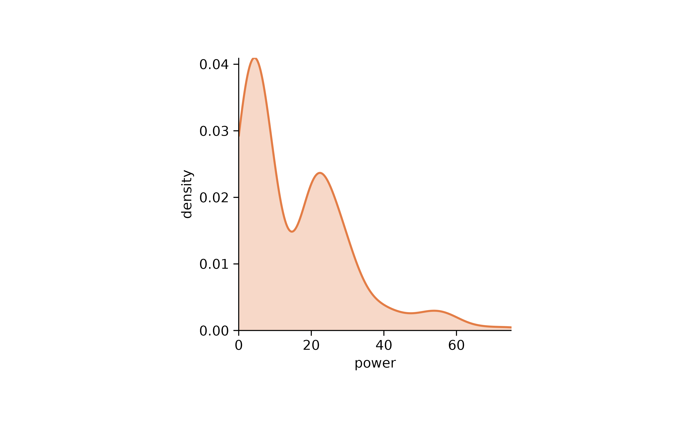
energy %>%
tidyplot(x = power) %>%
add_density_histogram() %>%
add_density_curve()
# multiple distributions
energy %>%
tidyplot(x = energy_type, y = power, color = energy_type) %>%
add_violin()
energy %>%
tidyplot(x = energy_type, y = power, color = energy_type) %>%
add_data_points_beeswarm(jitter_width = 0.8, alpha = 0.3)
energy %>%
tidyplot(x = energy_type, y = power, color = energy_type) %>%
add_violin() %>%
add_data_points_beeswarm(jitter_width = 0.8, alpha = 0.3)
Proportion
energy %>%
tidyplot(year, power, color = energy_source) %>%
add_barstack_absolute()
energy %>%
dplyr::filter(year %in% c(2005, 2010, 2015, 2020)) %>%
tidyplot(y = power, color = energy_source) %>%
add_pie() %>%
split_plot(by = year)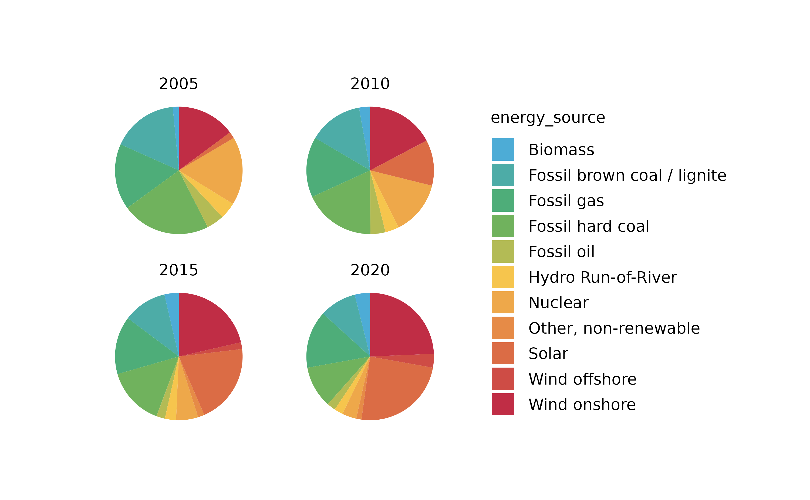
energy %>%
dplyr::filter(year %in% c(2005, 2010, 2015, 2020)) %>%
tidyplot(y = power, color = energy_source) %>%
add_donut() %>%
split_plot(by = year)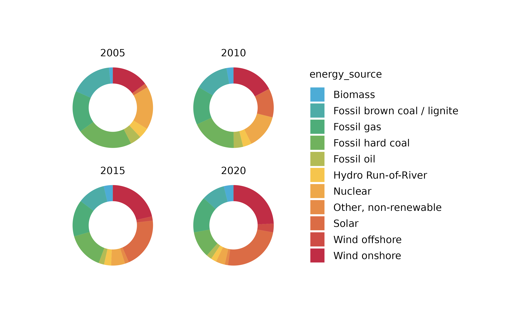


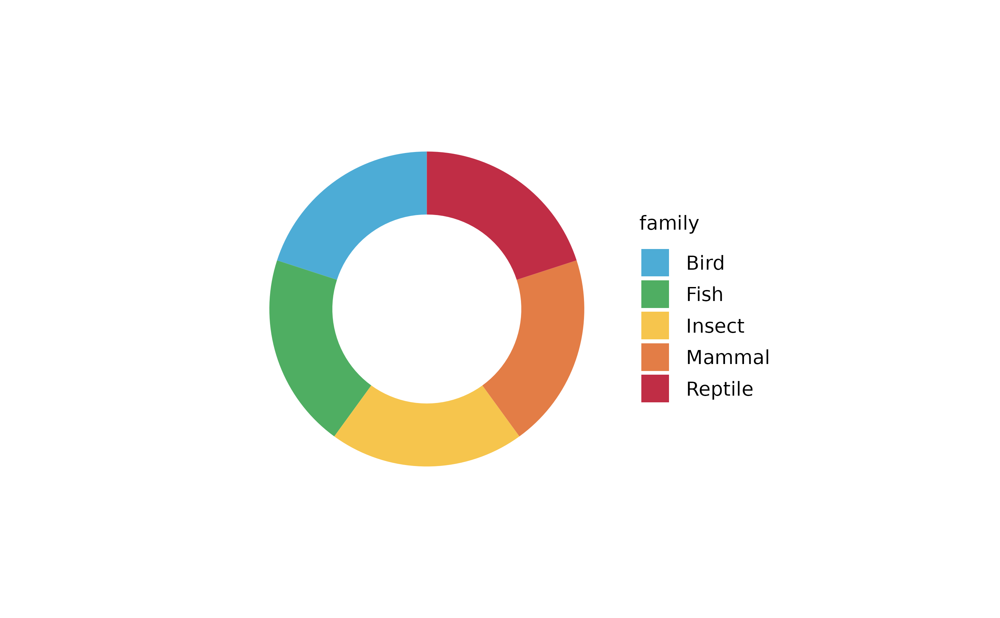
# add_barstack_absolute
animals %>%
tidyplot(color = family) %>%
add_barstack_absolute()
animals %>%
tidyplot(x = diet, color = family) %>%
add_barstack_absolute()
## with y supplied
animals %>%
tidyplot(y = diet, color = family) %>%
add_barstack_absolute()
animals %>%
tidyplot(x = diet, color = family) %>%
add_barstack_absolute()
animals %>%
tidyplot(x = diet, y = speed, color = family) %>%
add_barstack_absolute()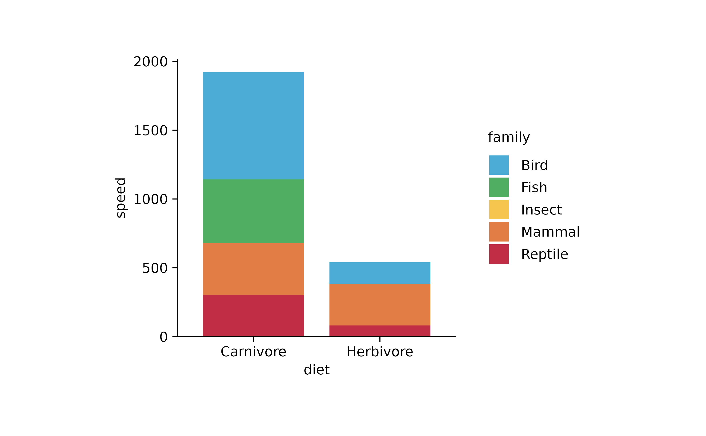
# add_barstack_absolute
animals %>%
tidyplot(x = diet, color = family) %>%
add_barstack_relative()
animals %>%
tidyplot(x = diet, color = family) %>%
add_barstack_absolute(alpha = 0.3) %>%
add_areastack_absolute()
## with y supplied
animals %>%
tidyplot(x = diet, y = speed, color = family) %>%
add_barstack_absolute(alpha = 0.3) %>%
add_areastack_absolute()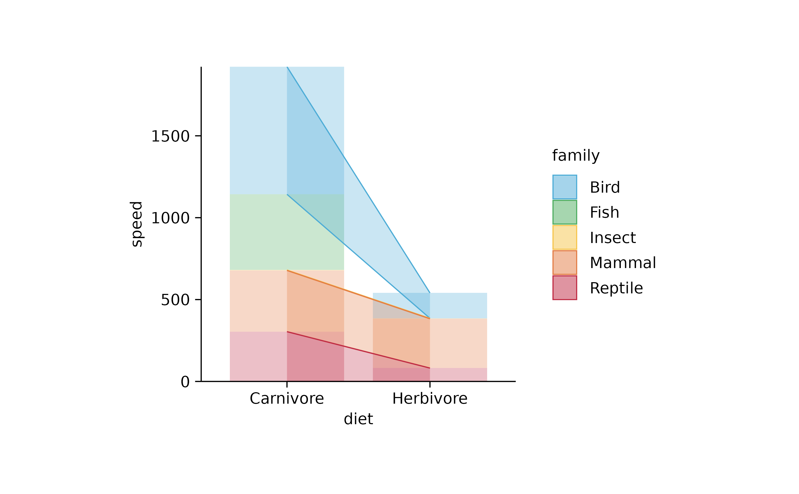
animals %>%
tidyplot(y = diet, color = family) %>%
add_barstack_relative()
animals %>%
tidyplot(x = diet, y = speed, color = family) %>%
add_barstack_relative()
Annotation
# curves
energy_week %>%
tidyplot(date, power, color = energy_source) %>%
add_line() %>%
remove_plot_area_padding()

energy_week %>%
tidyplot(date, power, color = energy_source) %>%
add_areastack_absolute()
energy_week %>%
tidyplot(date, power, color = energy_source) %>%
add_areastack_relative()
###
energy %>%
tidyplot(year, power, color = energy_type) %>%
add_barstack_absolute()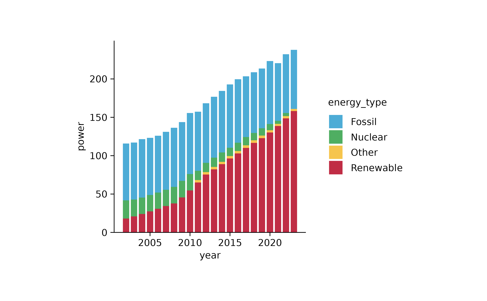
energy %>%
tidyplot(year, power, color = energy_type) %>%
add_barstack_relative()
new_colors <- c("Fossil" = "grey",
"Nuclear" = "#F6C54D",
"Renewable" = "#4FAE62",
"Other" = "#C02D45")
energy %>%
dplyr::filter(year %in% c(2005, 2010, 2015, 2020)) %>%
tidyplot(y = power, color = energy_type) %>%
add_pie() %>%
adjust_colors(new_colors = new_colors) %>%
split_plot(by = year)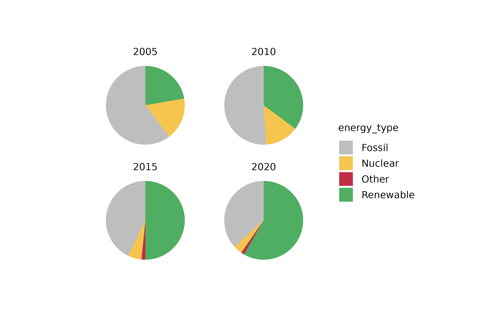
energy %>%
dplyr::filter(year %in% c(2005, 2010, 2015, 2020)) %>%
tidyplot(y = power, color = energy_type) %>%
add_donut() %>%
adjust_colors(new_colors = new_colors) %>%
split_plot(by = year)
energy %>%
dplyr::filter(year %in% c(2005, 2010, 2015, 2020)) %>%
tidyplot(x = year, y = power, color = energy_type, dodge_width = 0) %>%
add_sum_line() %>%
add_sum_dot() %>%
adjust_colors(new_colors = new_colors)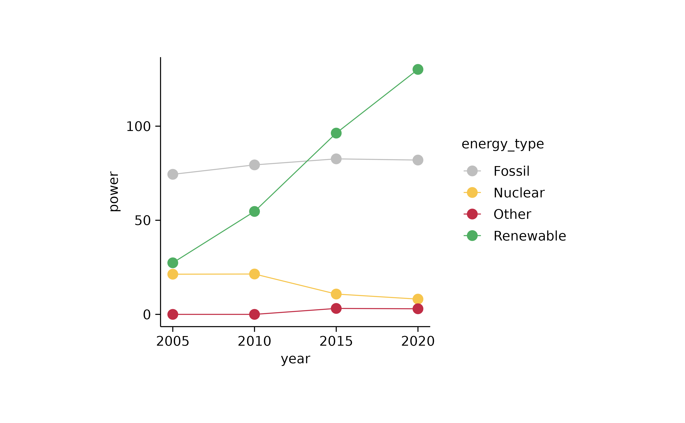
energy %>%
tidyplot(x = year, y = power, color = energy_type) %>%
add_areastack_absolute() %>%
adjust_colors(new_colors = new_colors)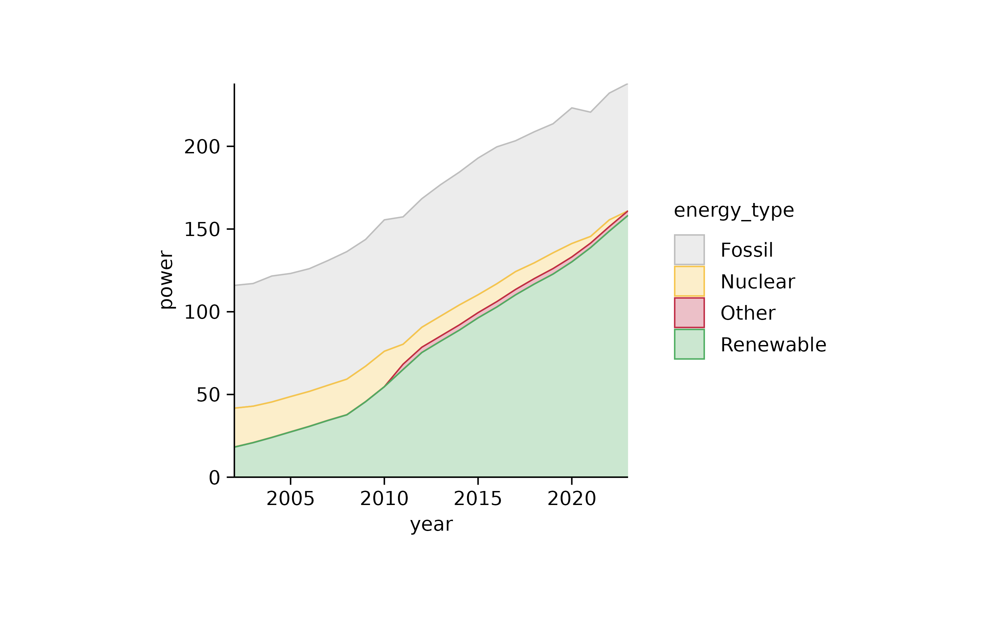
energy %>%
tidyplot(x = year, y = power, color = energy_source) %>%
add_areastack_absolute()
energy %>%
dplyr::filter(year %in% c(2005, 2010, 2015, 2020)) %>%
tidyplot(x = year, y = power, color = energy_type) %>%
add_areastack_relative() %>%
adjust_colors(new_colors = new_colors)
energy_week %>%
tidyplot(date, power, color = energy_type) %>%
add_sum_line() %>%
adjust_colors(new_colors = new_colors) %>%
remove_plot_area_padding()
energy_week %>%
dplyr::summarise(power = sum(power), .by = c(date, energy_type)) %>%
tidyplot(date, power, color = energy_type) %>%
add_area() %>%
adjust_colors(new_colors = new_colors)
energy_week %>%
tidyplot(date, power, color = energy_type) %>%
add_areastack_absolute() %>%
adjust_colors(new_colors = new_colors)
energy_week %>%
tidyplot(date, power, color = energy_type) %>%
add_areastack_relative() %>%
adjust_colors(new_colors = new_colors)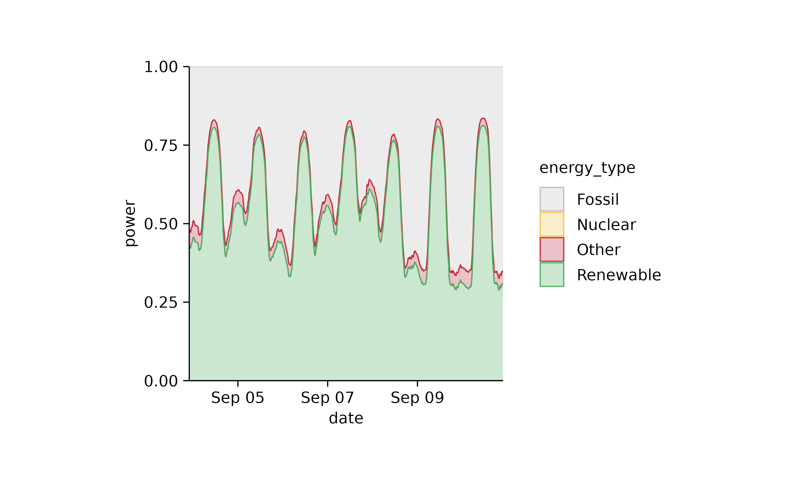
study %>%
tidyplot(x = treatment, y = score, color = treatment) %>%
add_mean_dash() %>%
add_ci95_bar()
study %>%
tidyplot(x = treatment, y = score) %>%
add_ci95_ribbon() %>%
add_mean_line() %>%
add_data_points_beeswarm()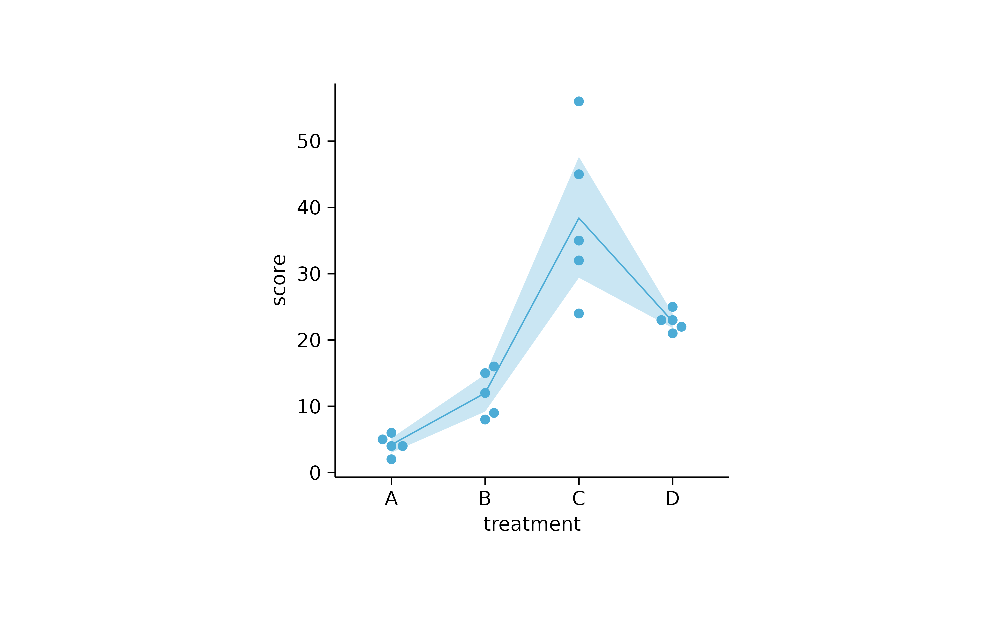
study %>%
tidyplot(x = treatment, y = score) %>%
add_ci95_ribbon() %>%
add_mean_line() %>%
add_data_points_beeswarm() %>%
adjust_colors("orange")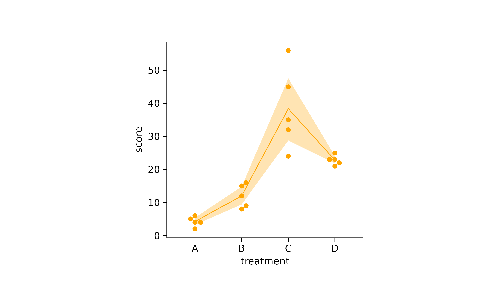
energy_week %>%
tidyplot(date, power, color = energy_source) %>%
add_line() %>%
remove_plot_area_padding()

energy_week %>%
tidyplot(date, power, color = energy_source) %>%
add_data_points()